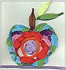

〝生命教育參考兒童圖書〞
-
祝你生日快樂/方素珍文 國語日報出版
-
Carousel /Brian Wildsmith 1988 ISBN: 0192723189
-
一顆種子(Ten Seeds)/露絲.布朗(Ruth Brown) 經典傳訊
-
精彩過一生
-
小魯的池塘 /三之三文化
-
雲上的小孩 /遠流
-
小殺手 / 天衛文化
-
風之王 / 天衛文化
-
曠野迷蹤 / 天衛文化
-
小河男河 / 天衛文化
-
最後十四堂星期二的課(大塊文化)
-
在我墳上起舞 (小知堂)
-
逃家小免
-
想念外公-----遠流 陳質采譯
-
爺爺的天使---三之三 高玉菁譯
-
心靈病房Wit(影片)---艾瑪湯普遜主演

- 感謝
- 威爾姆氏腫瘤
- 認識兒童癌症
- 威爾姆氏腫瘤相關網站
- 生命教育參考資訊
- 生命教育教學方案分享
- 意見交流
-
與孩子談死亡 Eric E. Rofes等著 洪瑜堅譯 遠流出版公司 民86.10初版
-
「弟弟不要怕」幼獅文化事業公司出版「縱谷裡的呼喚─社會關懷小說系列」
-
「雨，還下著嗎？」幼獅文化事業公司出版「縱谷裡的喚─社會關懷小說系列」
-
一片葉子落下來(The Fall of Freddie the Leaf)/作者李奧.巴卡力 經典傳訊出版
-
Heaven /Nichoas Allan Lodon:Hutchinson 1996 ISNB:13579108642
-
我永遠愛你(I'll always lobe you)/漢思. 威爾罕著(Hans Wilhelm, Inc.) 趙映雪譯 上誼文化出版 (Crown Publisher, Inc.)
-
橘色奇蹟(The Big Orange Splot)/丹尼.平克華特(by Daniel Manus Pinkwater)文圖, 1979 畢恆達譯 遠流出版
-
花婆婆(Miss Rumphius)/芭芭拉.庫尼(Barbara Cooney, 1982), 方素珍譯 三之三文化出
-
獾的禮物(Badger's Parting Gifts)/蘇珊.巴蕾(Susan Varley)文圖 1984 林真美譯 遠流
-
天使的約定 (Marty's World) http://showtime.yam.com/movie/events/angel/marty2.htm
導演：丹尼斯巴狄厄Denis Bardiau,演員：米歇爾塞侯Michel Serrault, 強納森德穆格Jonathan Demurger